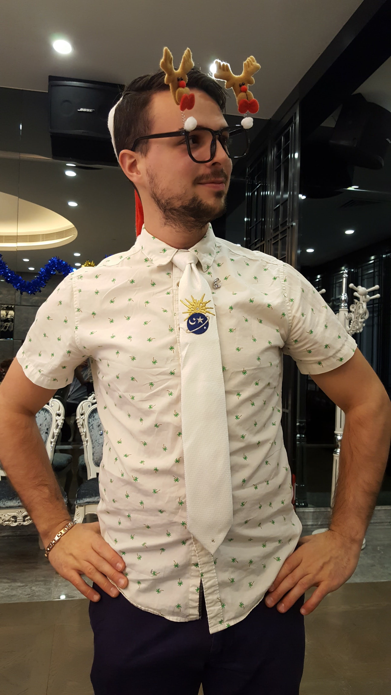

Hello and happy holidays! Gather round for a tale of 2017…
At the outset of the year I found myself celebrating around beloved friends, old and new, in India. I had just experienced Hong Kong for Christmas and an anniversary at a nude spa in Germany. All of this rolled into a wonderful series of weddings throughout the year (seven to close it out).

Back in Philly I found myself harangued into biking across Pennsylvania...in under 40 hours...a total of 385mi/600k. I still have nerve damage in my hands and feet. 10/10 would do again, many thanks to DayMann cycling for the…”encouragement”.
In June Jules and I moved to Milwaukee Wisconsin to be “closer” to Natalie. I am still convinced the move was only so that she would not longer have to cook for herself and would have readily available access to the dog. This year she has participated in a number of high profile conferences and think tanks. She’s so smart.
Thus far Milwaukee has been wonderful. Kind people, good friends, amazing tacos, copious beer, something going on every weekend. I’ve been fortunate enough to have fallen in with various creative types and climbers so it seems like I’m constantly learning. I also started mentoring a “little brother” through Big Brothers Big Sisters. Kids are ridiculous.
In October I found out that Natalie gets seasick while we were en route to my mother’s wedding in Nova Scotia. I now have three new brothers and sisters. I do not think any of them are ready for my brothers and I. Susan continues to embarrass and amaze us all. She is in her last year of her second graduate degree. Her apple pies are still delicious.
Both brothers continue to do extremely well in life. Bryan is in his final year at Georgia Tech, while Charley gets ready to step out into the real world. Bryan’s jobs are starting to require more state secrets (a fact he would totally never mention while around dinner to impress anyone) and his clothing is starting to match his car: too small and expensive. Charley is playing Ultimate Frisbee, designing a role playing drinking game, and helping area refugees in Atlanta. His life is a healthy balance of ridiculous and compassionate.
Everyday I realize how privileged I am to be surrounded by caring, driven, brilliant individuals. My family and friends are far too kind and thus continue to put up with my antics.
Much love from this corner of the world! To my friends, you know who you are.
Cheers,
Alex